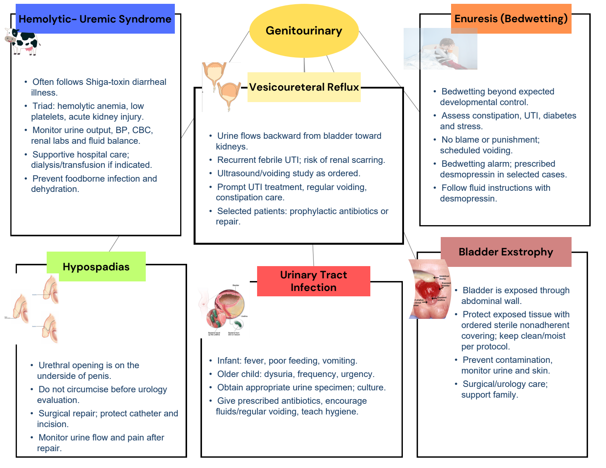
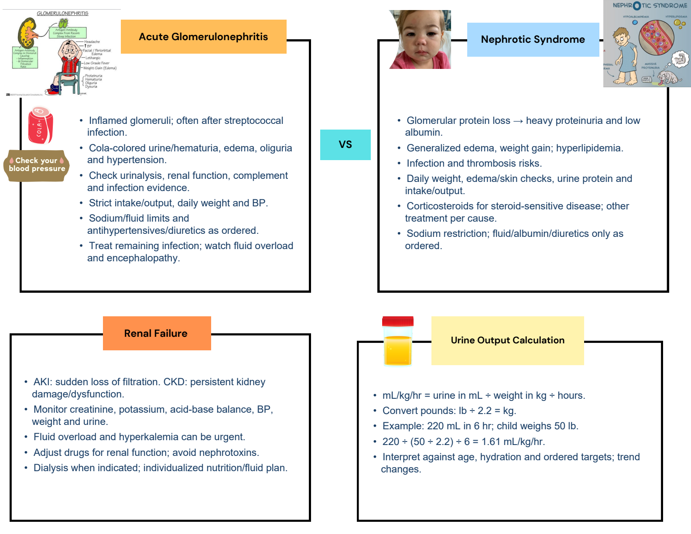

Completed maps with every original diagram. Switch to the original for blank practice.
1 / 2 Pediatric urinary disorders

Completed map · original artwork + added blue notesCompleted study notes · suggested additions
Hemolytic-uremic syndrome
- Often follows Shiga-toxin diarrheal illness.
- Triad: hemolytic anemia, low platelets, acute kidney injury.
- Monitor urine output, BP, CBC, renal labs and fluid balance.
- Supportive hospital care; dialysis/transfusion if indicated.
- Prevent foodborne infection and dehydration.
Vesicoureteral reflux
- Urine flows backward from bladder toward kidneys.
- Recurrent febrile UTI; risk of renal scarring.
- Ultrasound/voiding study as ordered.
- Prompt UTI treatment, regular voiding, constipation care.
- Selected patients: prophylactic antibiotics or repair.
Enuresis
- Bedwetting beyond expected developmental control.
- Assess constipation, UTI, diabetes and stress.
- No blame or punishment; scheduled voiding.
- Bedwetting alarm; prescribed desmopressin in selected cases.
- Follow fluid instructions with desmopressin.
Hypospadias
- Urethral opening is on the underside of penis.
- Do not circumcise before urology evaluation.
- Surgical repair; protect catheter and incision.
- Monitor urine flow and pain after repair.
Urinary tract infection
- Infant: fever, poor feeding, vomiting.
- Older child: dysuria, frequency, urgency.
- Obtain appropriate urine specimen; culture.
- Give prescribed antibiotics, encourage fluids/regular voiding, teach hygiene.
Bladder exstrophy
- Bladder is exposed through abdominal wall.
- Protect exposed tissue with ordered sterile nonadherent covering; keep clean/moist per protocol.
- Prevent contamination, monitor urine and skin.
- Surgical/urology care; support family.
Original selectable text
Exact extraction; text embedded inside pictures remains in the full-size original visual.
Genitourinary
Bladder Exstrophy
Enuresis (Bedwetting)
Hypospadias
Hemolytic- Uremic Syndrome
Urinary Tract
Infection
Vesicoureteral Reflux
2 / 2 Renal comparisons and urine output

Completed map · original artwork + added blue notesCompleted study notes · suggested additions
Acute glomerulonephritis
- Inflamed glomeruli; often after streptococcal infection.
- Cola-colored urine/hematuria, edema, oliguria and hypertension.
- Check urinalysis, renal function, complement and infection evidence.
- Strict intake/output, daily weight and BP.
- Sodium/fluid limits and antihypertensives/diuretics as ordered.
- Treat remaining infection; watch fluid overload and encephalopathy.
Nephrotic syndrome
- Glomerular protein loss → heavy proteinuria and low albumin.
- Generalized edema, weight gain; hyperlipidemia.
- Infection and thrombosis risks.
- Daily weight, edema/skin checks, urine protein and intake/output.
- Corticosteroids for steroid-sensitive disease; other treatment per cause.
- Sodium restriction; fluid/albumin/diuretics only as ordered.
Renal failure
- AKI: sudden loss of filtration. CKD: persistent kidney damage/dysfunction.
- Monitor creatinine, potassium, acid-base balance, BP, weight and urine.
- Fluid overload and hyperkalemia can be urgent.
- Adjust drugs for renal function; avoid nephrotoxins.
- Dialysis when indicated; individualized nutrition/fluid plan.
Urine output calculation
- mL/kg/hr = urine in mL ÷ weight in kg ÷ hours.
- Convert pounds: lb ÷ 2.2 = kg.
- Example: 220 mL in 6 hr; child weighs 50 lb.
- 220 ÷ (50 ÷ 2.2) ÷ 6 = 1.61 mL/kg/hr.
- Interpret against age, hydration and ordered targets; trend changes.
Original selectable text
Exact extraction; text embedded inside pictures remains in the full-size original visual.
Acute Glomerulonephritis
Nephrotic Syndrome
VS
Renal Failure
Urine Output Calculation